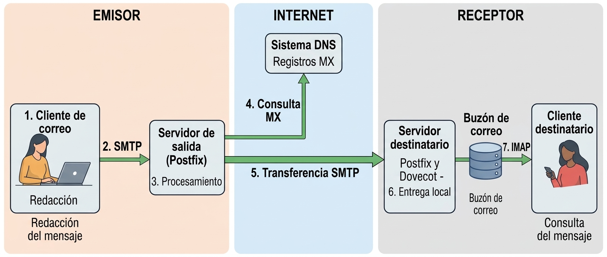
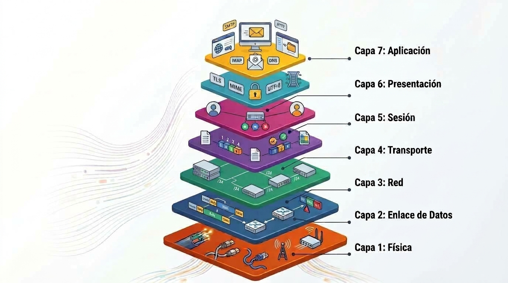

Una aproximación a la comunicación por correo electrónico, sus componentes y los protocolos que permiten enviar y consultar mensajes a través de una red.
Introducción: ¿cómo funciona el correo electrónico?
El correo electrónico es uno de los servicios de comunicación más utilizados en Internet, aunque desde la perspectiva de una persona parece una tarea sencilla como escribir un mensaje, indicar un destinatario y presionar el botón de enviar, es importante conocer que detrás de esa acción intervienen diferentes programas, servidores y protocolos que trabajan de manera coordinada.
Cuando se envía un mensaje, la información debe salir del dispositivo de quien lo redacta, encontrar un servidor que pueda recibirla y llegar al buzón correspondiente. Después, la persona destinataria necesita un mecanismo para consultar ese mensaje, por esta razón, el correo electrónico no depende de un único protocolo, si no que utiliza varios servicios que cumplen funciones diferentes dentro del proceso de comunicación.
El tema asignado al Grupo 7 corresponde a los servicios de correo electrónico.
Esta página presenta una explicación conceptual de sus conceptos fundamentales y presenta la función de tecnologías como SMTP, IMAP, Postfix y Dovecot, relacionándolas con los contenidos de la capa 7 de Aplicación del Modelo OSI.
Elementos que participan en el servicio
Para entender cómo viaja un correo electrónico sin entrar todavía en detalles técnicos, resulta útil imaginarlo como un servicio postal tradicional en el que hay alguien que escribe la carta, una dirección en el sobre, oficinas postales que la transportan y un casillero donde se guarda, de modo que en Internet cada una de esas tareas cumple una función específica:
Cliente de correo
Es la ventana o programa con el que se interactua todos los días para escribir, leer y organizar mensajes, (como Gmail en el navegador, Outlook o la aplicación de correo del celular), ya que su papel principal es servir como intermediario visual entre la persona y el sistema de correo.
Dirección y dominio de correo
Representa la ubicacion del destinatario, este funciona como los datos escritos en un sobre y tiene dos partes separadas por la arroba, por ejemplo usuario@gmail.com, donde lo que va antes (usuario) identifica a la persona o cuenta específica, mientras que lo que va después (gmail.com) corresponde al dominio, es decir, el nombre de la organización o proveedor donde está alojada esa cuenta.
Servidor de correo
Es un computador especializado que permanece encendido y conectado a Internet las 24 horas para gestionar el correo, de manera que, así como una oficina postal recibe cartas, revisa a dónde van y las despacha, el servidor recibe los mensajes que salen, busca hacia dónde enviarlos y guarda los que llegan, aunque en sistemas reales esta labor suele dividirse entre un servicio que transporta mensajes y otro que permite consultarlos.
Buzón
Es el espacio privado reservado para cada cuenta dentro del servidor y equivale a un casillero postal personal, pues allí quedan almacenados los mensajes incluso cuando la persona apaga su computador o teléfono, manteniéndose organizados en carpetas como la bandeja de entrada, los enviados o los borradores.
Sistema DNS y registros MX
Cuando se envía un mensaje a @gmail.com, el servidor de salida consulta el DNS, que actúa como una guía de direcciones en Internet. Allí revisa una anotación llamada registro MX (Mail Exchanger), la cual indica quien es el servidor encargado de recibir los correos de ese dominio.
Protocolos de comunicación
Para que aplicaciones y servidores fabricados por distintas empresas puedan entenderse sin errores, necesitan seguir las mismas reglas y hablar un mismo idioma técnico, motivo por el cual existen los protocolos, entre los que destacan SMTP para enviar y entregar mensajes e IMAP para abrir el buzón y leerlos.
Herramientas de referencia: Postfix y Dovecot
En una infraestructura de correo pueden utilizarse diferentes programas para cubrir las tareas de transporte y acceso a los mensajes. Postfix y Dovecot son dos ejemplos que suelen trabajar de manera complementaria, aunque sus funciones no son iguales.
Postfix: transporte de mensajes
Postfix es un agente de transferencia de correo, conocido en inglés como MTA (Mail Transfer Agent), cuya función principal es actuar como el encargado de despacho que mueve los mensajes de un servidor a otro. Cuando recibe un correo mediante el protocolo SMTP, lo ubica en una fila de espera ordenada y determina cuál es la ruta adecuada para entregarlo según su configuración y el destino final.
Por ejemplo, cuando un usuario envía un mensaje a una cuenta de otro dominio, el servidor de salida debe identificar a qué servidor dirigirlo, por lo que Postfix consulta los registros MX del DNS de ese dominio y, una vez identificado el destino, establece la conexión SMTP para transferir el correo.
Dovecot: acceso a los buzones
Dovecot es el programa que gestiona el acceso a los buzones personales, trabajando principalmente con los protocolos IMAP y POP3 (otro protocolo utilizado para descargar mensajes desde el servidor). De este modo, cuando una persona abre su aplicación o página de correo, Dovecot atiende la solicitud para mostrar la bandeja de entrada, organizar las carpetas y mantener los mensajes sincronizados entre distintos dispositivos.
Además de permitir la consulta del correo, dispone de mecanismos de entrega local, como LDA (Local Delivery Agent) y LMTP (Local Mail Transfer Protocol), que sirven para depositar los mensajes recién llegados dentro del buzón correspondiente.
Por esta razón, en un sistema donde ambos programas trabajan juntos, Postfix recibe el mensaje desde el exterior y se lo entrega a Dovecot mediante LMTP para que este lo guarde en el casillero del usuario, aunque la tarea exacta que cumpla cada herramienta siempre dependerá de cómo se configure el servidor.
Comparación general de las herramientas
Herramienta
Función principal
Protocolos o mecanismos relacionados
Postfix
Transferir y gestionar el envío de mensajes entre sistemas de correo.
SMTP
Dovecot
Permitir el acceso de los usuarios a los mensajes de sus buzones; también puede participar en la entrega local si se configura.
IMAP, POP3, LDA y LMTP
Protocolos principales: SMTP e IMAP
Aunque ambos se utilizan en los servicios de correo electrónico, SMTP e IMAP no realizan la misma tarea. La diferencia principal está en el momento del proceso en el que intervienen, SMTP se encarga del envío y la transferencia de mensajes, mientras que IMAP permite acceder a los mensajes que se encuentran en un buzón del servidor.
SMTP: envío y transferencia
El Simple Mail Transfer Protocol (SMTP), es el conjunto de reglas encargado de enviar y transportar los mensajes de un punto a otro, por lo que entra en acción tanto cuando la aplicación del usuario entrega un correo recién escrito al servidor de salida como cuando un servidor se comunica con otro para llevar ese mensaje hasta su destino.
Para lograrlo, durante una conexión SMTP el cliente y el servidor mantienen una breve conversación ordenada mediante comandos y respuestas, en la que primero se identifican, luego indican quién envía el correo y quién lo debe recibir, y finalmente transmiten el contenido del mensaje, de modo que el servidor pueda revisar los datos y responder con un código numérico que confirma si el correo fue aceptado para su entrega o si ocurrió algún problema (como una dirección de destino inexistente).
IMAP: consulta y organización de mensajes
El Internet Message Access Protocol (IMAP), es el encargado de permitir que una aplicación de correo consulte los mensajes y carpetas directamente en el servidor donde están guardados, lo cual ofrece la gran ventaja de mantener toda la información sincronizada entre distintos dispositivos. De este modo, si una persona lee o borra un correo desde su computador y más tarde revisa su cuenta desde el teléfono, encontrará exactamente los mismos mensajes, carpetas y estados (como leído, no leído o destacado), ya que ambos equipos están consultando el mismo buzón en tiempo real.
Por otra parte, conviene tener presente que IMAP no interviene cuando se redacta y envía un mensaje nuevo hacia otra persona, puesto que su función se limita exclusivamente a revisar y administrar el correo almacenado en el buzón, mientras que para despachar mensajes salientes siempre se utiliza un protocolo de envío como SMTP.
Comparación detallada entre SMTP e IMAP
Aspecto
SMTP
IMAP
Función principal
Enviar mensajes desde el cliente hacia el servidor de salida y transferirlos entre servidores hasta llegar al dominio de destino.
Consultar, leer y organizar los mensajes y carpetas que ya se encuentran almacenados en el buzón del servidor.
Equipos que participan
La aplicación del remitente con su servidor de salida, así como servidores de correo comunicándose entre sí.
La aplicación del destinatario comunicándose directamente con el servidor donde está alojado su buzón.
Manejo y sincronización
Solo transporta el mensaje hacia adelante, por lo que no se encarga de guardar carpetas ni de sincronizar estados entre equipos.
Mantiene los correos y sus estados (leído, no leído o borrado) sincronizados en tiempo real entre el computador, el celular y la web.
Ejemplo cotidiano
Redactar un correo, presionar el botón de enviar y lograr que el mensaje viaje hacia otra cuenta.
Abrir la bandeja de entrada desde el teléfono y revisar un mensaje que llegó mientras el equipo estaba apagado.
En términos sencillos, SMTP permite que el mensaje salga y avance hacia su destino; IMAP permite que la persona destinataria consulte los mensajes que tiene disponibles en su buzón.
¿Qué recorrido sigue un correo electrónico?
Aunque el camino exacto puede variar dependiendo de si el remitente y el destinatario pertenecen al mismo dominio o a proveedores distintos, el siguiente esquema y su lista paso a paso muestran cómo viaja un mensaje cuando se envía hacia una cuenta alojada en otro dominio:
1. Redacción: la persona escribe el mensaje desde su cliente de correo e indica la dirección del destinatario.
2. Envío al servidor: el cliente entrega el mensaje al servidor de salida, normalmente mediante SMTP y utilizando los mecanismos de autenticación y protección que tenga configurados el sistema.
3. Procesamiento: el servidor de salida, que puede funcionar con Postfix, recibe el mensaje, lo ubica en su cola de envío y lo prepara para transferirlo.
4. Identificación del destino: como el mensaje va dirigido a otro dominio, el servidor consulta los registros MX del DNS para averiguar qué servidor recibe el correo de ese destino.
5. Transferencia: una vez ubicado el destino, el servidor de salida establece una conexión SMTP con el servidor destinatario para enviarle el mensaje.
6. Entrega al buzón: el servidor que recibe el correo realiza la entrega local, de modo que, según cómo esté configurado el sistema, puede guardarlo por su cuenta o apoyarse en Dovecot (mediante mecanismos como LMTP) para depositarlo en el buzón correspondiente.
7. Consulta: finalmente, la persona destinataria abre su aplicación de correo y se conecta al buzón mediante IMAP para leer el mensaje.

Figura 1. Recorrido general de un correo electrónico entre distintos dominios.
Puertos habituales de los servicios de correo
Para que distintos servicios puedan convivir en un mismo servidor sin mezclarse entre sí, las redes utilizan los puertos TCP, que funcionan como las distintas ventanillas de atención de una misma oficina postal, de modo que mientras la dirección del servidor indica a qué edificio llegar, el número de puerto señala exactamente qué tarea se va a realizar en esa conexión.
En el correo electrónico no se utiliza un único puerto para todo, ya que resulta necesario separar el envío de mensajes desde la aplicación del usuario, la transferencia entre servidores y la consulta del buzón, además de diferenciar las conexiones tradicionales sin cifrar de aquellas que protegen los datos y las contraseñas mediante TLS (Transport Layer Security, el protocolo de cifrado que asegura la comunicación en Internet).
Puertos TCP más utilizados en los servicios de correo electrónico
Puerto
Protocolo
Función principal
Contexto de uso
25
SMTP
Transferencia de mensajes entre distintos servidores de correo.
Canal tradicional para la comunicación directa entre servidores.
587
SMTP
Recepción de correos nuevos enviados desde la aplicación del usuario hacia su servidor de salida.
Puerto habitual en la actualidad para el envío desde clientes de correo.
465
SMTPS
Envío de mensajes desde la aplicación del usuario hacia el servidor de salida.
Variante del envío desde clientes que incorpora cifrado en la conexión.
143
IMAP
Consulta y sincronización de mensajes y carpetas almacenados en el buzón.
Puerto tradicional para acceder al buzón desde una aplicación.
993
IMAPS
Consulta y administración de los mensajes y carpetas del buzón.
Variante del acceso al buzón que incorpora cifrado en la conexión.
De manera complementaria, cuando un servidor admite el protocolo POP3 para descargar mensajes, suele emplear el puerto 110 para conexiones estándar y el puerto 995 cuando utiliza cifrado TLS, aunque en cualquier entorno real los puertos habilitados dependerán siempre de la configuración del servidor y de las reglas del firewall.
Ejemplos simplificados de comunicación
Para comprobar de forma práctica cómo se aplican los conceptos explicados en esta página, imaginemos una situación cotidiana en la que Brenda (brenda@gmail.com) le escribe un correo con el asunto Hola a Santiago (santiago@gmail.com). Aunque en un entorno real los servidores cifran primero la conexión mediante TLS y validan credenciales, los siguientes diálogos simplificados muestran las órdenes que intercambian el cliente (C) y el servidor (S) durante todo el proceso.
Primera parte: Brenda envía el mensaje mediante SMTP
En este primer intercambio, la aplicación de correo de Brenda se comunica con el servidor de salida para entregar el mensaje dirigido a santiago@gmail.com, siguiendo una conversación ordenada en la que cada instrucción recibe una confirmación numérica:
S: 220 smtp.gmail.com ESMTP Postfix
C: EHLO cliente.gmail.com
S: 250 smtp.gmail.com
C: MAIL FROM:<brenda@gmail.com>
S: 250 Ok
C: RCPT TO:<santiago@gmail.com>
S: 250 Ok
C: DATA
S: 354 End data with <CR><LF>.<CR><LF>
C: Subject: Hola
C:
C: Mensaje de prueba.
C: .
S: 250 Ok: queued
C: QUIT
S: 221 Bye
Traducción paso a paso del diálogo SMTP
Comando o código
Significado en la comunicación
220 y EHLO
El servidor saluda al abrir la conexión y el cliente se presenta para iniciar el envío.
MAIL FROM y RCPT TO
El cliente indica quién envía el correo (brenda@gmail.com) y quién lo debe recibir (santiago@gmail.com).
DATA, 354 y el punto (.)
El cliente avisa que va a redactar el correo, el servidor responde con 354 indicando que está listo para recibirlo
y, al final, el cliente envía un punto solo entre saltos de línea (<CR><LF>) para señalar que terminó de escribir.
250 Ok y QUIT
El servidor confirma con el código 250 que aceptó el correo en su cola de entrega y finalmente ambos cierran la conexión.
Segunda parte: Santiago lee el mensaje mediante IMAP
Minutos después, Santiago abre su aplicación de correo desde el celular para revisar su bandeja de entrada, momento en el cual entra en acción el protocolo IMAP para consultar el buzón y mostrar en pantalla el mensaje exacto que envió Brenda:
C: a1 SELECT INBOX
S: * 2 EXISTS
S: a1 OK [READ-WRITE] SELECT completed
C: a2 FETCH 2 BODY[TEXT]
S: * 2 FETCH (BODY[TEXT] {18}
S: Mensaje de prueba.
S: )
S: a2 OK FETCH completed
C: a3 LOGOUT
S: * BYE Logging out
S: a3 OK Logout completed
Traducción paso a paso de la consulta IMAP
Comando o respuesta
Significado en la comunicación
a1 SELECT INBOX
La aplicación de Santiago solicita abrir la carpeta principal de su bandeja de entrada (INBOX).
* 2 EXISTS
El servidor responde avisando que actualmente existen dos mensajes guardados dentro de ese buzón.
a2 FETCH 2 BODY[TEXT]
El cliente pide leer el contenido del segundo correo, por lo que el servidor le entrega el texto Mensaje de prueba.
a3 LOGOUT
Una vez consultado el mensaje, la aplicación cierra la sesión de lectura de manera ordenada.
De esta manera se comprueba cómo ambos protocolos se complementan en una misma historia, ya que SMTP se encarga únicamente de transportar el mensaje desde brenda@gmail.com hasta el servidor de destino, mientras que IMAP permite que santiago@gmail.com abra su buzón y visualice ese contenido en su dispositivo.
Seguridad y aspectos que deben tenerse en cuenta
Aunque en los ejemplos anteriores se omitieron las contraseñas y el cifrado para facilitar la lectura de los comandos, en un servicio real de correo electrónico resulta indispensable proteger tanto las credenciales de acceso como el contenido de los mensajes mientras viajan por la red. La siguiente tabla resume los principales riesgos y los mecanismos que se aplican para prevenirlos:
Mecanismos principales de seguridad en un servicio de correo electrónico
Riesgo o necesidad
Mecanismo de protección
Funcionamiento en el servicio
Lectura de mensajes o captura de contraseñas en la red
Cifrado TLS y STARTTLS
Protege la comunicación entre cliente y servidor desde el inicio (en los puertos 465 y 993) o convierte una conexión estándar en cifrada antes de enviar datos privados (en los puertos 587 y 143).
Uso no autorizado del servidor para enviar correo masivo (open relay)
Autenticación obligatoria
El servidor de salida (Postfix) exige usuario y contraseña antes de aceptar correos hacia otros dominios, evitando que terceros lo utilicen para distribuir correo no deseado.
Exposición de servicios internos o tráfico abusivo
firewall
Mantiene abiertos hacia Internet únicamente los puertos necesarios y bloquea mecanismos internos como LMTP; además, muchos proveedores filtran el puerto saliente 25 en conexiones domésticas.
Suplantación de identidad del dominio remitente
Registros DNS (SPF, DKIM y DMARC)
Permiten que el servidor destinatario compruebe si el mensaje proviene realmente de un servidor autorizado por el dominio de origen y si llegó sin alteraciones.
En conjunto, la combinación de canales cifrados, autenticación de usuarios y un control adecuado tanto en el cortafuegos como en el DNS garantiza que el intercambio de mensajes entre clientes y servidores se realice de manera confiable y privada.
Relación con el Modelo OSI
Después de revisar cómo viaja un correo electrónico, qué puertos utiliza y cómo se protege la comunicación, resulta útil ubicar todos estos elementos dentro del Modelo OSI (Open Systems Interconnection), un marco de referencia que divide el funcionamiento de las redes en siete niveles o capas para organizar las tareas que permiten que dos equipos se comuniquen.

Figura 2. Ubicación principal de los protocolos de correo electrónico en la Capa 7 del Modelo OSI.
Como se destaca en la figura, los protocolos encargados directamente del servicio de correo electrónico trabajan en la Capa 7 (Aplicación), ya que es el nivel donde las aplicaciones del usuario y los servidores (como Postfix y Dovecot) estructuran los mensajes, gestionan los buzones e intercambian comandos de texto.
Sin embargo, la Capa 7 no actúa de forma aislada, sino que se apoya en las capas inferiores para que los datos puedan viajar desde el equipo del remitente hasta el servidor del destinatario. Mientras que las capas de Presentación (Capa 6) y Sesión (Capa 5) intervienen en el formato de los caracteres, la codificación de archivos adjuntos y el cifrado mediante TLS, la Capa 4 (Transporte) emplea el protocolo TCP para garantizar que los paquetes lleguen completos y en orden a través de puertos específicos como el 587 o el 993. Más abajo, la Capa 3 (Red) utiliza el direccionamiento IP para encaminar los datos entre distintos servidores en Internet, y finalmente las capas de Enlace de datos (Capa 2) y Física (Capa 1) se encargan de transmitir las señales a través del cableado o la red inalámbrica.
Participación de las capas del Modelo OSI en el servicio de correo electrónico
Capa del Modelo OSI
Protocolos o tecnologías
Papel en el envío y lectura del correo
Capa 7: Aplicación
SMTP, IMAP, POP3, DNS
Define los comandos para enviar mensajes, consultar registros MX y gestionar los buzones desde el cliente.
Capas 6 y 5: Presentación y Sesión
MIME, UTF-8, TLS
Estandariza el formato del texto o archivos adjuntos y mantiene activa y cifrada la sesión entre cliente y servidor.
Capa 4: Transporte
TCP (puertos 25, 587, 465, 143, 993)
Establece una comunicación confiable de extremo a extremo y dirige los datos hacia el puerto del servicio correcto.
Capas 3, 2 y 1: Red, Enlace y Física
IP, Ethernet, Wi-Fi
Enruta los paquetes entre redes de distintos dominios y los transmite por el medio físico disponible.
De este modo se observa que el correo electrónico es un servicio propio de la capa superior del modelo, aunque depende del funcionamiento coordinado de toda la pila de red para entregar cada mensaje a su destino.
Relación con la actividad práctica de Capa 7
Aunque el contenido de este sitio explica el funcionamiento del correo electrónico, su propia publicación aplica directamente los conceptos de la Capa 7 (Aplicación). El navegador solicita las páginas en HTML puro mediante HTTP y el servidor web Nginx, ejecutado dentro de un contenedor Docker construido con el Dockerfile del proyecto, se encarga de entregarlas sin instalar ni configurar Postfix o Dovecot.
De forma complementaria, el repositorio en GitHub permite almacenar y versionar los archivos del sitio, mientras que el archivo README.md reúne las instrucciones necesarias para descargar y reproducir la práctica en cualquier otra máquina.
Glosario de términos
Término
Definición
DNS
Sistema que traduce nombres de dominio y permite consultar registros MX para saber qué servidores reciben correo.
MTA
Agente de transferencia de correo encargado de enrutar y transportar mensajes entre servidores.
IMAP
Protocolo de aplicación que permite consultar y administrar mensajes almacenados en el servidor.
SMTP
Protocolo estándar utilizado para enviar y transferir mensajes de correo electrónico.
TCP
Protocolo de transporte orientado a conexión que garantiza la entrega ordenada y sin errores de los datos.
TLS
Protocolo criptográfico que cifra la comunicación entre cliente y servidor para proteger credenciales y mensajes.
Fuentes de consulta
Páginas y documentos técnicos consultados durante la elaboración de este sitio para verificar el funcionamiento de los protocolos de correo y el despliegue del servidor web.
RFC 5321 Simple Mail Transfer Protocol. Documento base donde se define el funcionamiento del protocolo SMTP y el intercambio de mensajes entre servidores.
Documentación oficial de Postfix. Manuales de referencia sobre la arquitectura y configuración básica de un agente de transferencia de correo.
Documentación de Dovecot. Guías técnicas sobre la gestión de buzones y el acceso de clientes mediante IMAP y POP3.
Documentación de Nginx. Referencia utilizada para entender cómo opera el servidor web en capa de aplicación al entregar archivos HTML.
Guía de inicio de Docker. Documentación consultada para estructurar el contenedor y reproducir el entorno del sitio web.
Integrantes del Grupo 7
El desarrollo de la actividad se presenta como un trabajo colaborativo. En las páginas individuales se encuentra la información de cada integrante y su reflexión sobre los aprendizajes del curso.